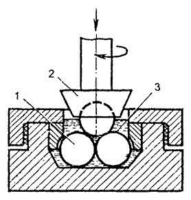
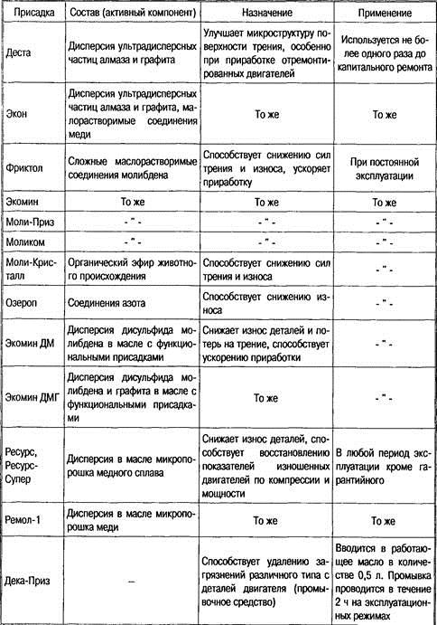
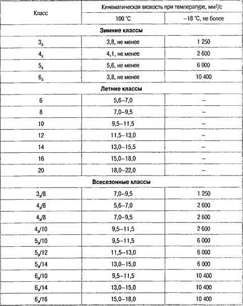

Тема 8.1
Классификация масел
Моторные масла
Условия
работы и причины старения
Старение масла происходит
вследствие загрязнения его пылью, продуктами износа, сгорания топлива и
физико-химических изменений углеводородов.
Старение масла может
вызвать:
— закоксовывание
поршневых колец;
— заклинивание клапанов в
направляющих втулках;
— прогарание клапанов;
— сокращение проходных
сечений маслоприемников насосов, фильтров, каналов смазочной системы;
— повышение коррозии
деталей;
— абразивный износ.
Старение масла происходит
вследствие загрязнения его пылью, продуктами износа, сгорания топлива и
физико-химических изменений углеводородов.
Старение масла обусловлено его работой, которая происходит в
условиях высоких термических и динамических нагрузок и сопровождается такими
факторами, которые вызывают глубокие физико-химические изменения свойств
материала и ухудшение их эксплуатационных показателей. К этим факторам
относятся: использование наддува; форсирование скоростных и нагрузочных
режимов работы двигателя; уменьшение удельной емкости смазочной системы.
В зависимости от температуры, при которой происходит
окисление масла, могут образовываться шламы, лаки и нагар.
Шламы — это
густые мазеобразные липкие темного цвета продукты, образующиеся при невысоких
температурах (как правило, не более 120 °С), выпадающие из масла в виде осадка
и создающие отложения в картерах, масляных магистралях, фильтрах и пр.
Шламы состоят на половину или на две трети из масла, а
остальное — вода (5—35 %), топливо, продукты окисления, пыль, продукты износа.
Удаляются шламы из двигателя путем промывки его маловязким
маслом или специальными промывочными жидкостями.
Лаки представляют собой прочные тонкие
пленки толщиной 50—200 мкм с гладкой поверхностью, образующиеся на горячих
деталях двигателя при температуре порядка 250 °С, где наряду с испарением часть
масла окисляется и разлагается, превращаясь в твердый осадок. Лаковые отложения
состоят из углерода (до 85 %), водорода, кислорода и имеют цвет от
светло-желтого до черного.
В качестве растворителя лаков применяют бензол, хлороформ, ацетон и
щелочные растворы.
Нагар — это
твердая углеродистая масса с шероховатой поверхностью, чаще черного цвета,
образующаяся в камере сгорания, где температура более 2000 °С.
При работе на этилированном бензине нагар на 50 % состоит из соединений
свинца. Основными элементами, образующими нагар при работе на неэтилированном бензине, являются углерод
(до 75 %), кислород (до 20 %) и водород (до 5 %).
В составе отработавшего масла всегда больше кислот, его коррозионность
выше, а моющие свойства по сравнению со свежим маслом того же сорта хуже.
Качество работающего масла ухудшается из-за попадания в него воды. Особенно
интенсивно идет образование воды при низких температурах, когда водяные пары
соприкасаются с холодными стенками картера.
Эксплуатационные
свойства
Смазочные свойства моторных масел имеют большое
значение для нормальной работы кривошипно-шатунного и газораспределительного
механизмов двигателя. В цилиндропоршневой группе, где возникают наибольшие силы
трения, высокие смазочные свойства масел во многом определяют ресурс двигателя
до его капитального ремонта. Не меньшее значение имеет постоянное наличие
надежной масляной пленки в зоне контакта опорных и шатунных шеек коленчатого
вала с подшипниками скольжения. Смазочные свойства моторных масел определяют
испытаниями на стендах или автомобилях. В лабораторных условиях они оцениваются
на четырехшариковой машине (рис. 1) при заданных осевых нагрузках, определяя
индекс задира, критическую нагрузку, нагрузку сваривания и показатель износа. В
испытываемое масло помещается неподвижная обойма с тремя закрепленными
шариками, расположенными в горизонтальной плоскости. Над обоймой вращается
шпиндель с закрепленным в нем четвертым шариком. Шарик в патроне находится в
центре между трех других шариков и, вращаясь, может прижиматься к ним с
заданной нагрузкой.

Рис. 1. Рабочий узел четырехшариковой машины трения:
1 — неподвижные шарики (3 шт.); 2 — вращающийся шпиндель с шариком; 3 —
масло
Показатель износа, критическую нагрузку и
индекс задира определяют по диаметрам пятен износа каждого из трех нижних
шариков и добиваются понижения износа сопрягаемых деталей, изменяя состав
масла. Для этого противозадирные и противоизносные свойства масел повышают
добавлением к ним соответствующих присадок, создающих на поверхности металла
трущихся деталей прочные пленки, кроме того, регулируют вязкость масла.
Моющие свойства — способность масла обеспечивать необходимую чистоту деталей двигателя и
противостоять лакообразованию на горячих поверхностях, а также препятствовать
прилипанию углеродистых отложений.
Диспергирующие свойства определяют способность масла препятствовать слипанию углеродистых
частиц, удерживать их в состоянии устойчивой суспензии и разрушать крупные
частицы продуктов окисления.
Антиокислительные свойства определяют стабильность масла.
Противокоррозионные свойства оцениваются уровнем потерь массы металла, контактирующего с
маслом в определенных условиях.
Присадки применяют для придания маслам новых
свойств или изменения показателей. Многофункциональные присадки улучшают
одновременно несколько свойств масел.
Присадки применяют для придания маслам новых свойств или изменения
показателей. Присадки могут быть:
—
антиокислительные — повышают антиокислительную устойчивость;
—
противокоррозионные — защищают металлическую поверхность от коррозионного
воздействия кислото- и серосодержащих продуктов;
—
моюще-диспергирующие — способствуют снижению отложения продуктов окисления на
металлических поверхностях;
—
противоизносные, противозадирные и антифрикционные — улучшают смазочные
свойства;
—
депрессорные — понижают температуру застывания;
— вязкостные
— улучшают вязкостно-температурные свойства;
— антипенные
— предотвращают вспенивание.
На преодоление сил трения в двигателях внутреннего сгорания уходит около
трети расходуемого топлива. С помощью антифрикционных присадок и подбора
оптимальной вязкости моторного масла можно добиться снижения расхода топлива
максимально на 4,5 %.
В настоящее время существует широкий спектр дополнительных присадок к
моторным маслам для автомобиля. Следует знать, что ни одна из присадок не может
продлить срок службы моторного масла, но может способствовать хорошей обкатке
нового или отремонтированного двигателя, снижению износа деталей и расхода
топлива, продлению времени эксплуатации изношенного двигателя. Однако следует
соблюдать осторожность и не пользоваться непроверенными средствами, особенно,
если реклама обещает снижение расхода топлива на 15—20 %, расход масла — 40—50
% и износ на 40—60 % и более. С помощью смазочных веществ такого эффекта
добиться невозможно.
Так как современные моторные масла являются сложными, хорошо
сбалансированными растворами в минеральных маслах многих химических веществ, то
введение в него какого-то нового химически активного вещества может привести к
непредсказуемым последствиям и требует тщательной проверки.
В табл. 1 приведен перечень присадок к моторным маслам, которые Волжский
автомобильный завод после соответствующих испытаний допустил к применению.
Таблица 1. Присадки к моторным маслам, допущенные Волжским автомобильным
заводом

Классификация
моторных масел и их обозначение
Согласно принятой классификации масел, всем моторным маслам присвоен
индекс, и они разделены на классы и группы в зависимости от их вязкости и
эксплуатационных свойств.
По эксплуатационным свойствам (наличие и вид присадок) масла
делят на следующие группы:
А — для нефорсированных двигателей;
Б — для малофорсированных двигателей;
В — для среднефорсированных
двигателей;
Г — для высокофорсированных
двигателей;
Д — для дизелей, работающих в тяжелых
условиях.
Таблица 2. Классы моторных масел по
кинематической вязкости

По типу двигателя маслам присваивается цифровой индекс:
1 — для карбюраторных, 2 — для дизелей. Масла универсальные не имеют
индекса.
По вязкости масла подразделяются на три класса: летние, зимние,
всесезонные. Летние масла нормируются значением кинематической вязкости при
температуре 100 °С, зимние — при 100 и при —18 °С. Всесезонные масла
обозначаются дробью: в числителе указывается класс вязкости зимнего, а в
знаменателе — летнего масла.
Маркировка моторных масел включает в себя: букву «М» — принадлежность к
моторным маслам; цифру — класс кинематической вязкости (при обозначении
дробными цифрами в числителе указывается класс вязкости масла при температуре
—18 , а в знаменателе — при 100 °С).
Прописные буквы указывают на группу масла по эксплуатационным свойствам,
индекс 1 — для карбюраторных двигателей, 2 — для дизелей. Используют и дополнительные
индексы: рк — рабоче-консервационные масла; з — масло, содержащее загущающую
присадку; цл — для циркуляционных и лубрикаторных смазочных систем; 20 и 30 —
значение щелочного числа и т. д.
Примеры обозначения масел:
М-8-В1: М — моторное; 8 — класс вязкости; В — по эксплуатационным
свойствам относится к группе В (среднефорсированные двигатели); индекс 1 —
предназначено для карбюраторных двигателей.
М-10-Г2К: М — моторное; 10 — класс вязкости; Г — по
эксплуатационным свойствам относится к группе Г (высокофорсированные
двигатели); индекс 2 — предназначено для дизелей; индекс К — масло
предназначено для автомобилей марки «КамАЗ».
М-бз/10-В: М — моторное; 6 и 10 — классы вязкости; буква «з»
означает, что масло имеет загущающую присадку, улучшающую
вязкостно-температурные свойства, и предназначено для всесезонного или зимнего
применения; В (без индекса) — масло универсальное и предназначено как для
карбюраторных двигателей, гак и для дизелей.
С 1993 года наряду с классификацией по ГОСТу
применяется и мировая система классификации. В этом случае масла
классифицируются по вязкости – SAE (Содружество американских инженеров) и по
условиямэксплуатации или уровню качества, разработанному Американским нефтяным
институтом (API).
Согласно SAE масла подразделяются на три категории: летние, внесезонные,
зимние. Летние маркируются: 20, 30, 40, 50 (вязкость в секундах Сейболта при
температуре 98,9 °С); зимние – 10W, 15W, 20W, 25W (цифры означают вязкость в секундах Сейболта, а «W» - первая буква английского слова «Winter» - зима); внесезонные (загущенные)
масла имею двойную нумерацию. Например, 10W/50 означает, что данное масло при
температуре минус 17,8 °С соответствует по вязкости SAE 10, а при температуре 98,9 °С – SAE 50.
Классификация масла по уровням эксплуатации API подразделяет масла на две категории:
S – категория
«Сервис» (для карбюраторных двигателей) и С – коммерческая категория (для
дизелей). При этом для карбюраторных двигателей применяют маркировку SA, SB, SC, SD, SE, SF, а для дизелей – CA, CB, CD. Таким образом, вторая буква
обозначает степень качества масла. В
настоящее время за рубежом выпускают масла только групп SF и SG для бензиновых двигателей, а для
дизелей – CC, CD, CE.
Большинство современных масел универсальны, т.е. применимы как для
бензиновых двигателей, так и для дизелей. Такие масла имеют двойное обозначение
– SF/CC, SF/CD, CG/CD, SG/CE и др., где на основное назначение
указывают первые буквы.
В определенных условиях отработавшие масла собирают и регенерируют. В
маркировку таких масел добавляют букву «Р», например, М-8-Б1Р.
Соответствие отечественных и
зарубежных моторных масел по условиям эксплуатации и уровню качества
|
ГОСТ 17479.1-85 |
API |
Область
применения |
|
А |
SB |
Нефорсированные карбюраторные двигатели и дизели |
|
Б |
SC/CA |
Нефорсированные карбюраторные двигатели и дизели |
|
Б1 |
SC |
Малофорсированные карбюраторные двигатели, работающие в
условиях, соответствующих образованию высокотемпературных отложений и
коррозии подшипников |
|
Б2 |
CA |
Малофорсированные дизели |
|
В |
SD/CB |
Среднефорсированные карбюраторные двигатели и дизели |
|
В1 |
SD |
Среднефорсированные карбюраторные двигатели |
|
В2 |
CB |
Среднефорсированные дизели |
|
Г |
CE/CC |
Высокофорсированные дизели и карбюраторные двигатели без наддува |
|
Г1 |
CE |
Высокофорсированные карбюраторные двигатели |
|
Г2 |
CC |
Высокофорсированные дизели без наддува |
|
Д |
CD |
Высокофорсированные дизели с
наддувом, работающие в тяжелых условиях |
|
Е |
- |
Лубрикаторные смазочные системы цилиндров дизелей,
работающие на топливе с высоким содержанием серы |
|
- |
SF |
Бензиновые двигатели зарубежных автомобилей выпуска после 1980- |
|
- |
SF/CD |
Дизельные и карбюраторные двигатели (универсальное масло) |
|
- |
SG |
Бензиновые двигатели зарубежных автомобилей выпуска после |
|
- |
CE |
Турбонаддувные дизели выпуска после |
|
- |
SG/CE |
Дизели и карбюраторные двигатели (универсальное масло) |
|
- |
SF-4 |
Быстроходные дизели с турбонаддувом, с повышенными требованиями |
Существует еще и европейская классификационная система АСЕА (Ассоциация
европейских производителей). Европейские двигатели легковых автомобилей
конструктивно более форсированы и работают при больших частотах вращениях
коленчатого вала и удельных нагрузках. Поэтому масла, отвечающие американскому
стандарту, не всегда соответствует американским требованиям.
Согласно АСЕА, масла по назначению делятся на три категории:
А — для бензиновых двигателей, В — для дизелей легковых автомобилей, Е —
для дизелей грузовых автомобилей. Число определяет эксплуатационные свойства: 1
— энергосберегающие масла; 2 — масла того же уровня, но не энергосберегающие; 3
— технические требования на перспективу.
Отечественные производители моторных масел в сопроводительных документах
и на упаковочной таре указывают, как правило, двойную маркировку: в
соответствии с ГОСТ, а также в соответствии с SAE и API.
Синтетические масла
Нефтяные масла не всегда полностью отвечают требованиям
современных конструкций автомобильных двигателей. Поэтому разработаны и
применяют синтетические масла, для производства которых не требуется нефть.
Синтетические масла отличаются, прежде всего, высокими
вязкостно-температурными свойствами.
Индекс вязкости у синтетических масел от 160 до 175, в то время как у
лучших образцов минеральных масел он не выше 120. Температура потери
подвижности у этих масел не выше 55—65 °С, в то же время при температурах до
250—300 °С их вязкость в три—пять раз выше, чем у равновязкого (при температуре
100 °С) минерального масла.
Для синтетических масел характерны высокая термическая стабильность,
низкая испаряемость, небольшие высокотемпературные отложения, хорошие
противоокислительные и диспергирующие свойства, противоизносные и
противозадирные свойства.
Как правило, синтетические масла можно смешивать с минеральными,
добавляя их в количестве 30—40 %. Некоторые синтетические масла (диэфиры)
более агрессивны к резиновым деталям, другие имеют недостаточные смазывающие и
противоизносные свойства (полисилоксаны) или пониженные вязкостно-температурные
свойства (фторуглероды).
Контрольные вопросы
1. Назовите причины старения моторного масла.
2. Перечислите требования, предъявляемые к моторным маслам.
3. Что относят к эксплуатационным свойствам масел?
4. Назовите виды присадок к маслам, их назначение?
5. Как классифицируются моторные масла по ГОСТ?
6. Как классифицируются моторные масла по SAE и API?
7. В чем преимущества синтетических масел перед минеральными?